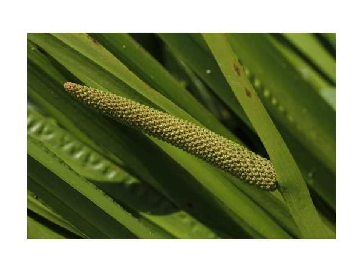

Acorus calamus
Common Names: Sweet Flag, Calamus, Vasambu
Local Name: வசம்பு (Tamil), Bach (Hindi)
Family: Acoraceae
Origin: Central Asia, Europe, North America; widely cultivated in India
Plant Type: Perennial rhizomatous herb
Average Lifespan: Perennial; harvested annually
| Growth Habit | Clumping rhizomatous herb; sword-like leaves |
| Plant Size | 0.5–1.5 meters tall |
| Leaves | Linear, sword-shaped, 60–120 cm long, aromatic when crushed |
| Flowers | Small, yellowish-green; densely packed on a spadix |
| Root System | Horizontal creeping rhizomes; aromatic, pungent, brown-pink |
| Climate | Tropical to temperate; prefers wetlands and marshy areas |
| Temperature Range | 15–35°C |
| Soil Type | Moist, loamy or clayey soil; tolerates waterlogged conditions |
| Soil pH Preference | 5.5–7.0 |
| Sun Requirement | Full sun to partial shade |
| Water Requirement | High; thrives in wet or waterlogged conditions |
| Can it Grow in Pots? | Yes, in large containers with water tray |
| Fertilizer Schedule | Monthly with compost or organic manure |
| Common Pests | Rhizome rot in poorly drained soil; generally hardy |
| Propagation by Cuttings | Rhizome division; plant sections with at least one bud node |
| Water Usage | High; grows naturally in wetlands and along water bodies |
| Biodiversity Benefits | Provides habitat for aquatic insects; stabilizes marshy banks |
| Digestive Health | Rhizome used for indigestion, flatulence, and colic; key herb in Siddha and Ayurveda |
| Immune Support | Used for speech disorders in children; traditionally given to infants for brain development |
| Anti-inflammatory Properties | Memory enhancement and cognitive support; contains beta-asarone and acorin |
Disclaimer: Information provided is for educational purposes only and not a substitute for medical advice.
Add your field observations here.